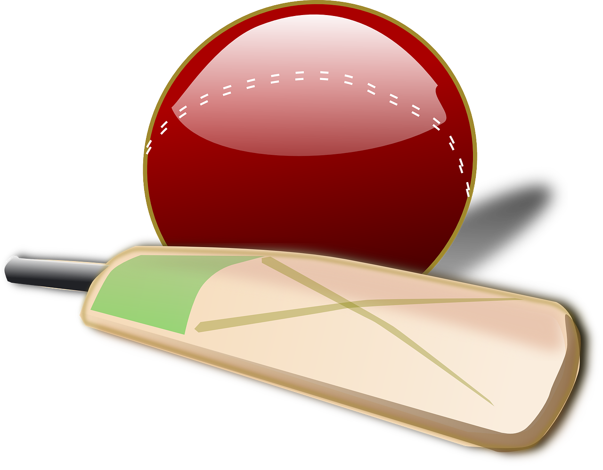
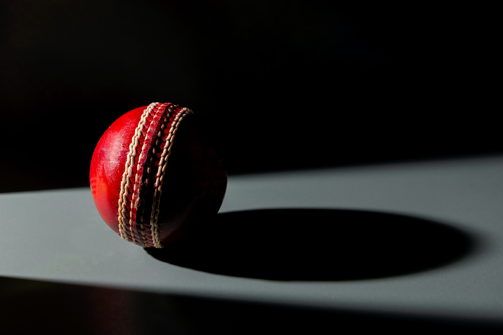
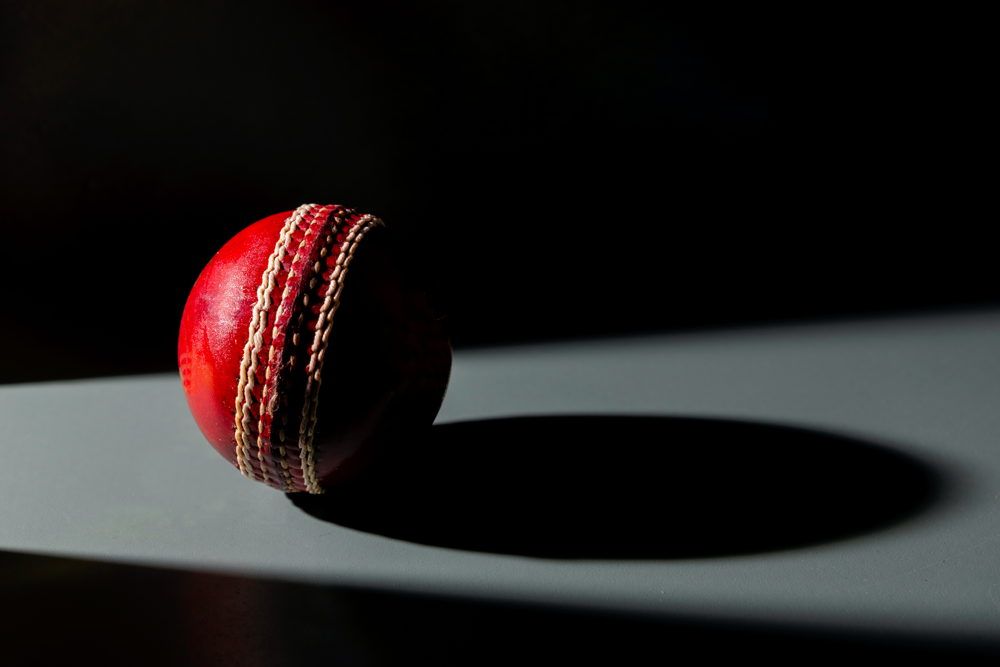

CRIC - INFO
Cricket is a bat-and-ball game played between two teams of eleven players on a field at the
centre of which is a 22-yard (20-metre) pitch with a wicket at each end, each comprising two bails balanced
on three stumps. The batting side scores runs by striking the ball bowled at the wicket with the bat (and
running between the wickets), while the bowling and fielding side tries to prevent this (by preventing the
ball from leaving the field, and getting the ball to either wicket) and dismiss each batter (so they are
"out"). Means of dismissal include being bowled, when the ball hits the stumps and dislodges the bails, and
by the fielding side either catching the ball after it is hit by the bat and before it hits the ground, or
hitting a wicket with the ball before a batter can cross the crease in front of the wicket. When ten batters
have been dismissed, the innings ends and the teams swap roles.
1
Bapu Nadkarni bowled 131 dot balls in a row
We know test cricket is a game of patience. It is characterized by defence and solidity.
However, India's left-arm spinner Bapu Nadkarni reached a different level as he bowled 131 consecutive
dot balls and 27 consecutive maidens against England in 1963. It is still a world record.
He finished with the figures of 32-27-5-0
2
Martin Guptill has only two toes !
The swashbuckling Kiwi opener Martin Guptill is a two-toed batsman. He lost the other three
toes in an accident when he was 14 years old. The New Zealand captain during that time was Stephen
Fleming. He visited him in the hospital and let him know that he would play for New Zealand.
Now, he is one of the best white-ball openers and fielders in the world. What a story!

Mahendra Singh Dhoni
Mahendra Singh Dhoni (born 7 July 1981), is a former
Indian international cricketer who captained the Indian national team in limited-overs formats from 2007
to 2017 and in Test cricket from 2008 to 2014. Under his captaincy, India won the inaugural 2007 ICC
World Twenty20, the 2010 and 2016 Asia Cups, the 2011 ICC Cricket World Cup and the 2013 ICC Champions
Trophy.
Sachin Tendulkar
Sachin Rameshbabu Tendulkar born 24 April
1973) is an Indian former international cricketer who served as captain of the Indian national team. He
is widely regarded as one of the greatest batsmen in the history of cricket.He is the highest run
scorer of all time in international cricket, and the only player to have scored one hundred
international centuries, the first batsman to score a double century in a One Day International (ODI),
the holder of the record for the most runs in both Test and ODI cricket, and the only player to complete
more than 30,000 runs in international cricket.
Virat Kohli
Virat Kohli born 5 November 1988) is
an Indian cricketer and the current captain of the India national team. A right-handed top-order
batsman, Kohli is regarded as one of the best contemporary batsmen in the world.He plays for Delhi
in domestic cricket and for Royal Challengers Bangalore in the Indian Premier League (IPL) as captain of
the franchise since 2013.
 
